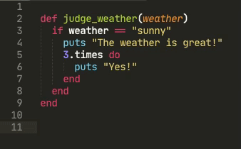

Ruby Monstas
Formatting your code
Motivation
Code formatting is important. It will help you to read and understand your code better.
Your brain is a pattern recognition machine. If you properly format your code you train your brain to subconciously recognise patterns of correct vs. incorrect code.
Thus it will also help you find bugs!
Compare these 2 pieces of code:
def widths ( row
)
row.map do | cell| cell.width
end
enddef widths(row)
row.map do |cell|
cell.width
end
end
Which is easier to read and understand?
Indentation
Proper indentation is the most important aspect of formatting your code
If you follow the following 2 rules, your code will be properly indented.
Don't worry: After a while these rules will be obvious and you will intuitively follow them.
Rule 1
Whenever you have one of these keywords, then the lines following it are indented one level deeper:
if
elsif
else
do
def
The same applies for these keywords which we haven't encountered yet:
unless
while
until
case
class
module
begin
rescue
ensure
Rule 2
Whenever you have one of these keywords, then that line is indented one level less deep:
elsif
else
end
The same applies for these keywords which we haven't encountered yet:
when
rescue
ensure
Example
Let's properly indent this code, line by line:
def widths(row)
row.map do |cell|
cell.width
end
end
For line 1, we don't need to do anything. It's stays indented 0 levels (top level):
def widths(row)
row.map do |cell|
cell.width
end
end
def. So we need to indent the following lines by +1 level (one level deeper):
def widths(row)
row.map do |cell|
cell.width
end
end
do, so Rule 1 applies again: we indent the following lines by +1 level (one level deeper):
def widths(row)
row.map do |cell|
cell.width
end
end
def widths(row)
row.map do |cell|
cell.width
end
end
end. Here we need to use Rule 2, which says that it gets indented one level less deep (-1 level) than the previous line:
def widths(row)
row.map do |cell|
cell.width
end
end
def widths(row)
row.map do |cell|
cell.width
end
end
And we're done!
Interactive exercise
Let's exercise the rules together with another example:
def judge_weather(weather)
if weather == "sunny"
puts "The weather is great!"
3.times do
puts "Yes!"
end
elsif weather == "rainy"
puts "Better stay inside..."
end
endPattern recognition
If done correctly, indentation lets you see immediately which lines of code belong together and which don't:
def judge_weather(weather)
if weather == "sunny"
puts "The weather is great!"
3.times do
puts "Yes!"
end
elsif weather == "rainy"
puts "Better stay inside..."
end
end
weatheris "sunny".
ends at the bottom of your file:
def ...
if ...
do
if ...
if ...
...
end
end
end
end
end
Hints
Never skip indentation levels from one line to the other:
array.each do |element|
if element.start_with?("A")
puts element
end
end
This is bad: Lines 2-4 are indented by 2 levels instead of 1!
Let your editor help you. It automatically increases and decreases indentation levels when you use a keyword.
Try it now! Type the following in your editor:
def my_method
And hit the enter key. Your cursor will automatically be indented by one level on the next line.
end. Your editor will automatically unindent that line for you:
def my_method
end
Use Tab and Shift + Tab to indent and unindent lines respectively.
This also works with multiple lines at once. Try it now!
end, immediately type that on the next line. This way you never have too many or too few
ends!
If you use indentation correctly, your editor allows you to expand and collapse code sections. Try clicking the little triangle that appears next to the line numbers!
Further information
The "official" Ruby style guide has more information on code formatting as well as which Ruby features to use or not use:
rubystyle.guideAdditional Resources
What questions do you have?